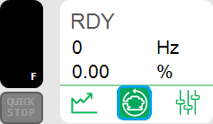
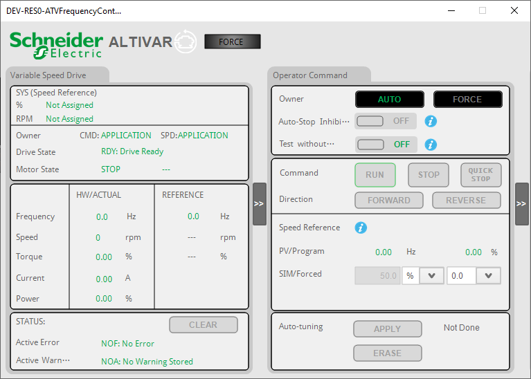
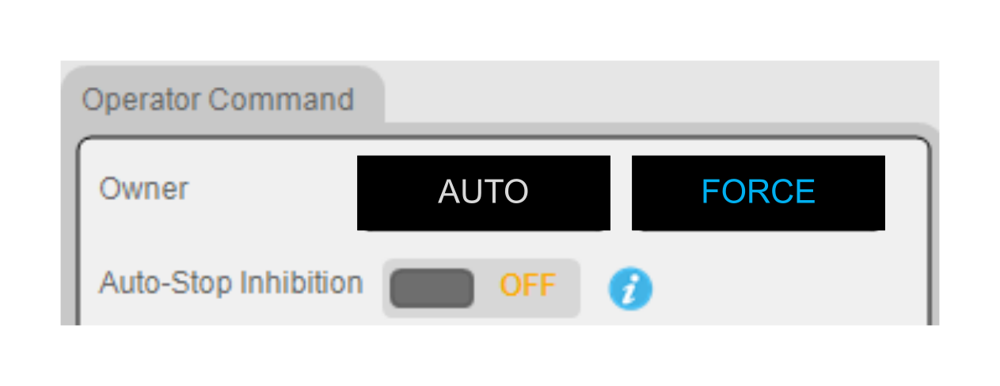
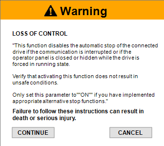
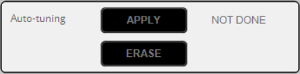
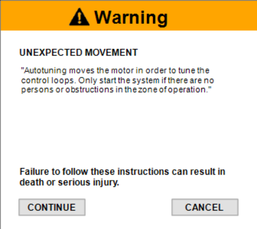
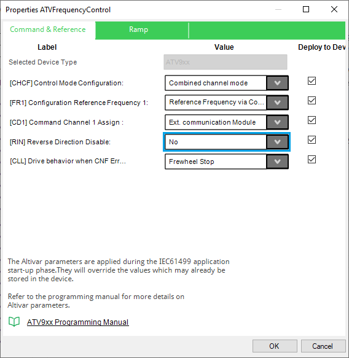
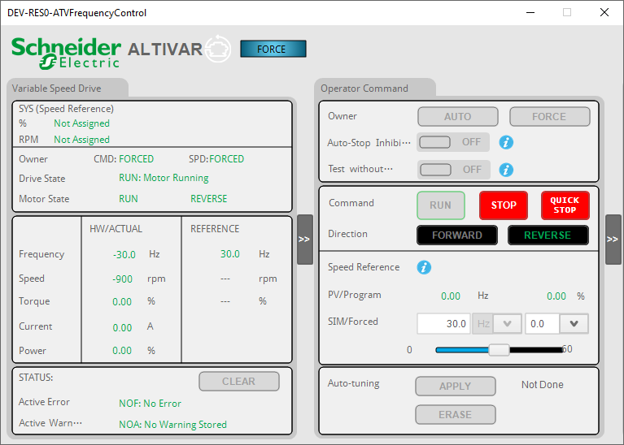
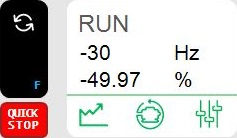

The ATVFrequencyControl - fpDriveCtrl faceplate allows you to:
Start, stop or quick stop the drive (Quick stop command allows the motor to decelerate very quickly).
Clear detected errors using the CLEAR button.
Observe and monitor various drive parameter values and states.
Select drive modes such as AUTO or FORCE Mode.
Select the direction of drive rotation (Forward or Reverse).
Usage
Access the ATVFrequencyControl - fpDriveCtrl faceplate by clicking the corresponding active zone in ATVFrequencyControl - sDrive.

Faceplate Components
The following figure illustrates the ATVSpeedControl - fpDriveCtrl faceplate:

The ATVSpeedControl : fpDriveCtrl faceplate consists of two main zones:
Variable Speed Drive
To monitor the parameters: SYS (Speed Reference), Owner, Drive State (command and speed), Motor State.
To monitor actual Hardware values with Reference Values: Frequency, Speed, Torque, Current and Power.
To monitor Status values: Last Error value and Last Warning Value.
To clear the detected errors by clicking the CLEAR button.
Operator Command
This zone provides you the various options for the following settings:
Owner: AUTO/FORCE.
Auto-Stop Inhibition: On/Off.
Test Without Device: On/Off.
Command: Run/Stop/Quick stop (Quick stop command allows the motor to decelerate very quickly).
Direction: Forward/Reverse.
Speed Reference: Calculated based on the Nominal Speed Value [NSP] parameter set in the drive. When the unit of the speed value changes, the value is set to 0.
PV/Program.
SIM/Forced: in rpm or % with decimal point adjustment.
Autotuning: Apply Autotuning/Erase Autotuning.
Autotuning Status: Not Done/Pending/In Progress/Error/Autotuning Done.
View or hide the Operator Command
Click on the following button to view or hide the Operator Command window.
| WARNING | |
|---|---|
Auto-Stop Inhibition
This safety measure stops unsupervised motor operation in forced mode if left unattended. By default, the Auto-Stop Inhibition position is OFF.

If FORCE mode is enabled and the drive is forced to RUN, the drive stops on ramp and is switches to the operating state Ready under the following conditions:
Communication interruption with the ATV dPAC.
Switching between different drive canvases or closing of the canvas.
If Auto-Stop Inhibition is set to ON, the following safety message is displayed:

AutoTune


If you click:
Continue: Auto-tuning is performed.
Cancel: Auto-tuning is not performed.
Reverse Inhibition (RIN)
Reverse Inhibition bit allows you to enable/disable the motor reverse direction.
The following table provides the details:
|
RIN |
Status |
|---|---|
|
RIN = 1 |
Motor Reverse command is disabled. |
|
RIN = 0 |
Motor Reverse command is enabled. |
To enable motor reverse direction:
Go to the Hardware Configuration.
Right-click on the ATVSpeedControl.
Select Properties Editor (New Window appears).
In the Command & Reference tab, set [RIN] Reverse Direction Disable to No.

The following figure illustrates the use case for [RIN] Reverse Direction Disable = No:

The ATVSpeedControl: sDrive faceplate displays the following parameters.
